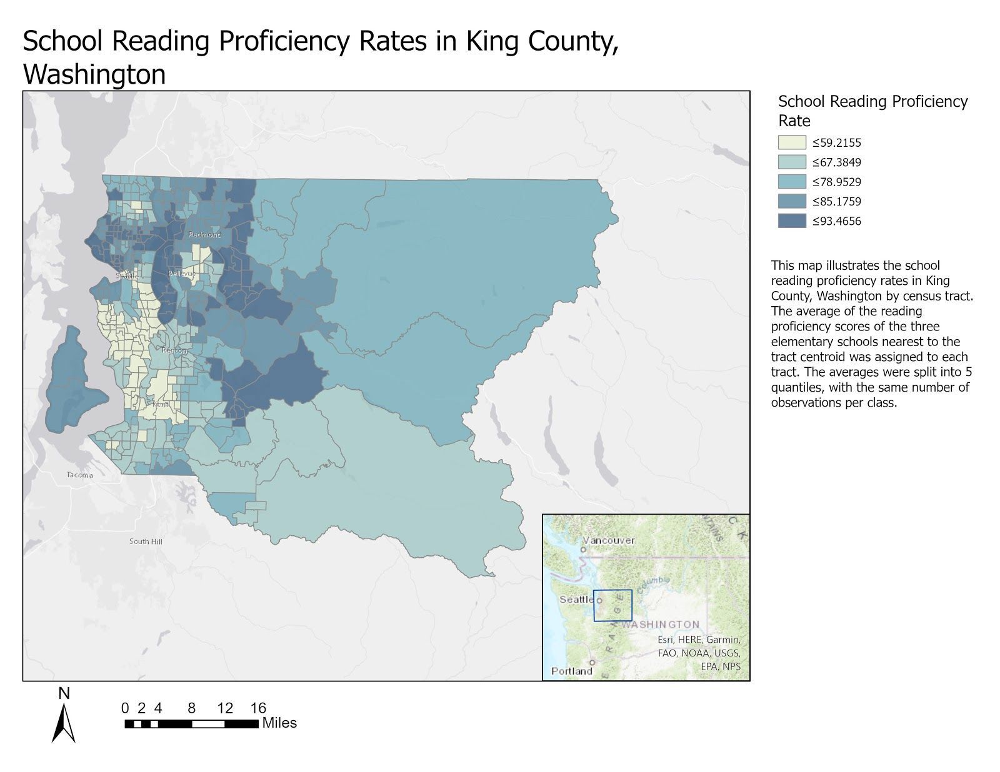
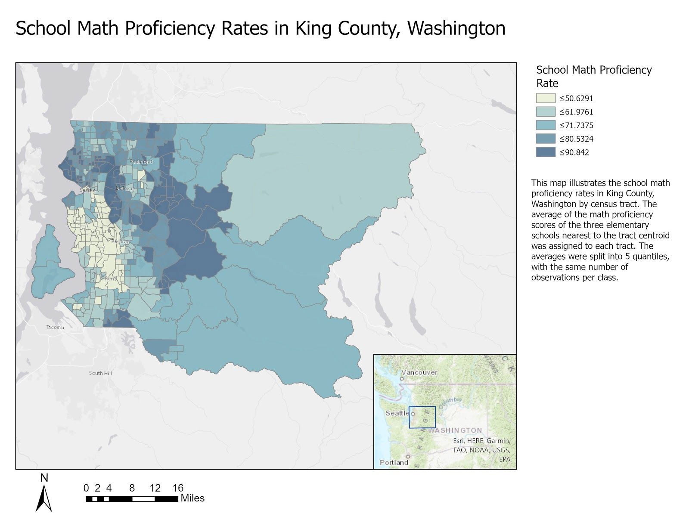
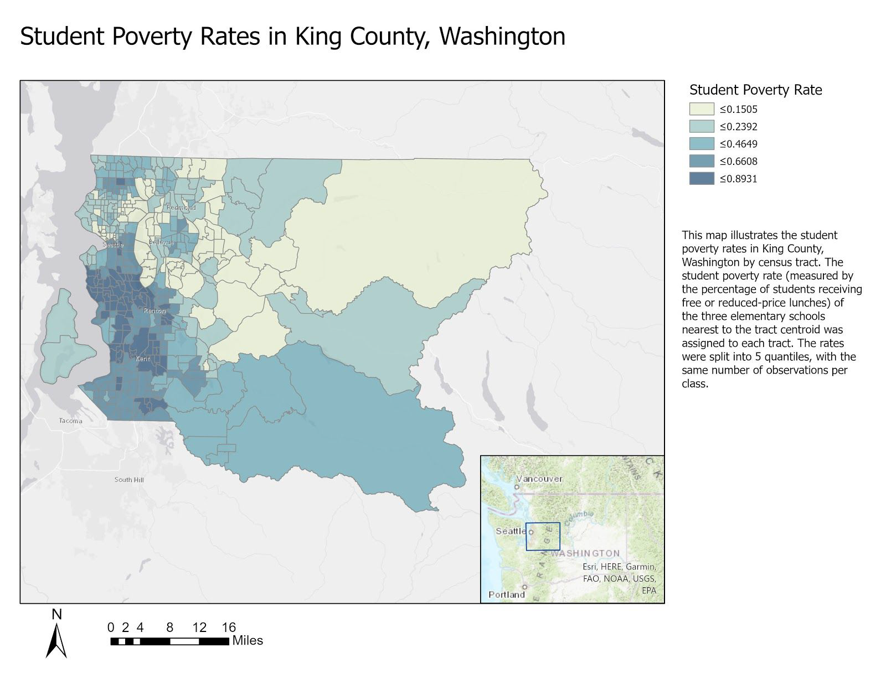
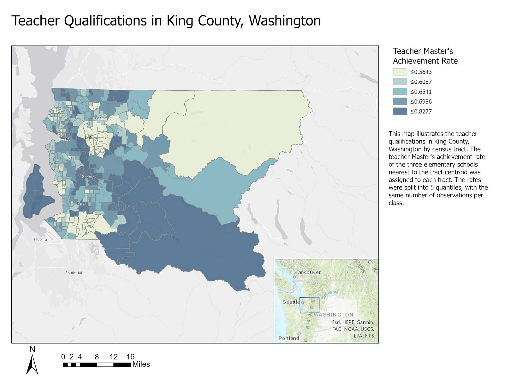
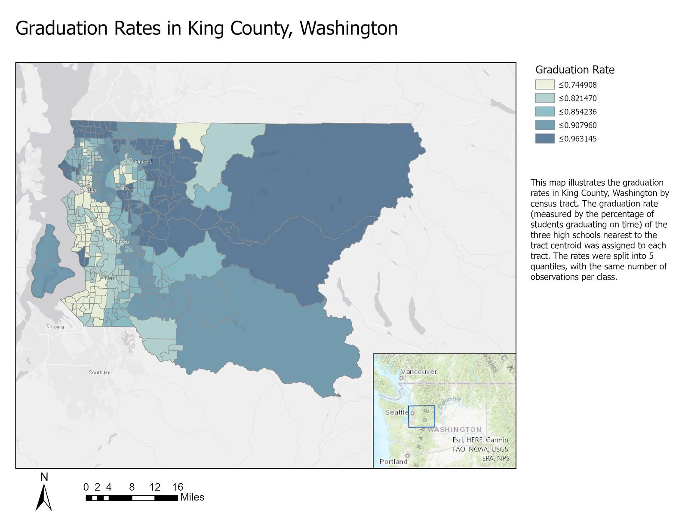
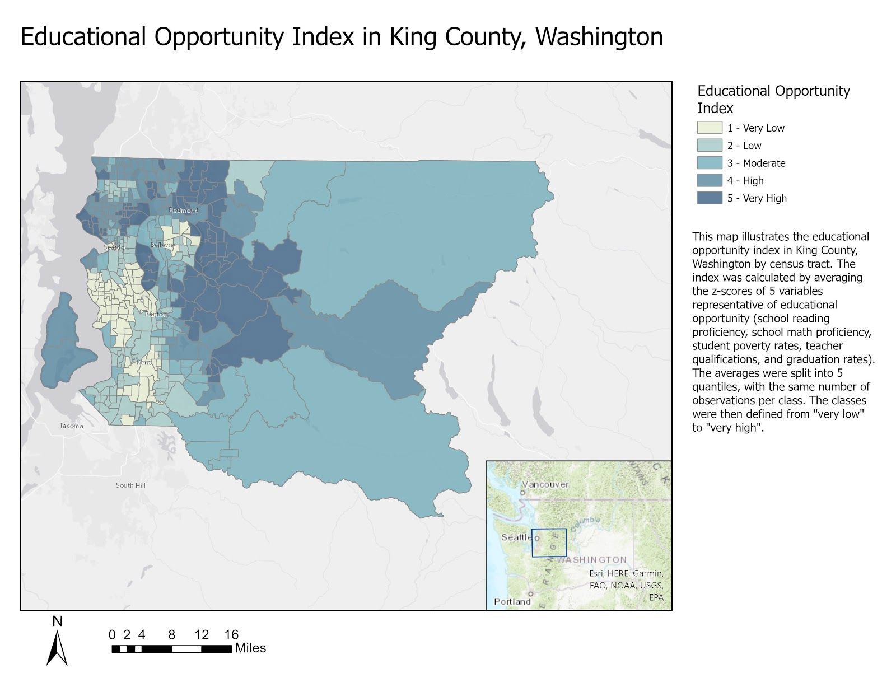

Intoduction to Washington State
Washington, officially the State of Washington, is a state in the Pacific Northwest region of the Western United States. Named for George Washington—the first U.S. president—the state was formed from the western part of the Washington Territory, which was ceded by the British Empire in 1846, in accordance with the Oregon Treaty in the settlement of the Oregon boundary dispute. The state—which is bordered on the west by the Pacific Ocean, Oregon to the south, Idaho to the east, and the Canadian province of British Columbia to the north—was admitted to the Union as the 42nd state in 1889. Olympia is the state capital; the state's largest city is Seattle. Washington is often referred to as Washington state to distinguish it from the nation's capital, Washington, D.C.
Washington is one of the wealthiest as well as most socially liberal states in the country. The state consistently ranks among the best for life expectancy and low unemployment. Along with Colorado, Washington was one of the first to legalize medicinal and recreational cannabis, was among the first states to legalize same-sex marriage in 2012, and was one of only four U.S. states to have been providing legal abortions on request before the 1973 Supreme Court decision in Roe v. Wade loosened abortion laws nationwide. Similarly, Washington voters approved a 2008 referendum on legalization of physician-assisted suicide, and Washington is currently one of ten states—along with Washington, D.C.—to have legalized the practice.
Intoduction to King County
King County is located in the U.S. state of Washington. The population was 2,269,675 in the 2020 census, making it the most populous county in Washington, and the 12th-most populous in the United States. The county seat is Seattle, also the state's most populous city.
King County is one of three Washington counties that are included in the Seattle–Tacoma–Bellevue metropolitan statistical area. (The others are Snohomish County to the north, and Pierce County to the south.) About two-thirds of King County's population lives in Seattle's suburbs.
Constructing an Educational Opportunity Index in King County
The indicators that are used to measure educational opportunity include school reading proficiency rates, school math proficiency rates, student poverty rates, teacher qualifications, and graduation rates. These indicators are measured for each census tract in King County.
School reading proficiency rates (EDU1) were defined as the scores on the 4th grade reading exam (WASL). The average of the reading scores of the three elementary schools closest to a census tract centroid was assigned for the whole tract.
School math proficiency rates (EDU2) were defined as the scores on the 4th grade mathematics exam (WASL). The same method as above was used to assign values to a tract.
Student poverty rates (EDU3) were defined as the percentage of elementary school students receiving free or reduced-price lunches. The combined rate of the three elementary schools closest to a census tract centroid was assigned for the whole tract.
Teacher qualifications (EDU4) were determined by the percentage of teachers who had obtained a Master’s degree or more. The method used to assign student poverty rates to a tract was also used for this variable, instead using the teacher Master’s achievement rate.
Graduation rates (EDU5) were determined by the percentage of students who graduated from high school on time. The method used for student poverty rates and teacher qualifications was used for this variable, as well.
An important factor to note about the calculation of the composite index score is that when calculating z-scores of the 5 indicators, the z-score for student poverty was inverted and multiplied by -1, so as to avoid the issue of a high percentage of poverty corresponding with high opportunity.
Indicator 1: School reading proficiency rates

In the map of EDU1, we can see that very low opportunity tracts seem to be clustered together in South Seattle, and continue to exist south of Seattle all the way down to Kent. There is a small cluster of very low opportunity places in Bellevue, as well as a smaller chunk a bit moderate opportunity tracts, but some are interestingly close to high or very high opportunity tracts. This sharp divide is valuable because it can help us note what differences exist between tracts, and essentially observe what is working well next to something that may not be working as well.
Indicator 2: School math proficiency rates

In the map of EDU2, we see very low opportunity places clustered similarly to EDU1. They are mostly located in South Seattle and south towards Kent. Here, the very low opportunity tracts are mostly surrounded by low and moderate opportunity tracts, with some high or very high opportunity tracts existing nearby.
Indicator 3: Student poverty rates

The map of EDU3 looks quite different from those of EDU1 and EDU2. We mostly see very low opportunity places on the Eastside and north of Lake Washington. There are quite a few very low opportunity tracts in the North and Northeastern parts of the county. The very low opportunity tracts for EDU3 seem to be more scattered than the ones we have seen previously, as well. It is interesting to note that the areas labelled as very low opportunity in terms of the first two variables are actually considered to be high opportunity for this variable. I think this illustrates that poverty is experienced across the board, and that an important determinant of poverty is the cost of living in a particular area. Seeing low opportunity in Bellevue, for example, is not extremely surprising, considering how expensive it is to live in that city.
Indicator 4: Teacher qualifications

EDU4 seems to produce an even more scattered map than EDU3. We see very low opportunity tracts in the North and Northeastern parts of the county, as well as in the South. There are quite a few very low opportunity tracts clustered in Bellevue, which was surprising to me. I would have expected an affluent city with a renowned school district to have the ability to hire teachers with greater qualifications. This is a variable that I believe could potentially be explored in depth to understand the exact effects of having a greater percentage of teachers with advanced degrees. Perhaps it is not as great of an indicator of opportunity as other variables, or maybe we are failing to see deep inequity within a tract. It could be possible that some students may not be as affected by low scores on an indicator variable as others, because of external factors that may be supporting their educational experience.
Indicator 5: Graduation rates

The map of EDU5 sees very low opportunity tracts clustered in South Seattle and south towards Renton, and then appearing again in a cluster by Kent and towards Tacoma. There is a small group in the Bellevue/Renton area, as well as a standalone in the north part of the county. This map seems to display similar patterns to the maps of EDU1 and EDU2.
Educational opportunity index

The composite education opportunity map illustrates very low opportunity areas as being mostly clustered in South Seattle, as well as all the way south towards Kent. There is also a scattered patch of very low opportunity tracts in Bellevue. Some important things to note is that many of the moderate, low, or very low opportunity areas are areas in which there is a large minority population. The historical effects of segregation and red-lining must not be overlooked when assessing opportunity. We do not live in a vacuum, and therefore cannot just think about what could be causing inequity currently. We must address the root of inequity, and how the very structure of our communities can disadvantage certain groups. Another important fact drawn from these maps is that even supposedly affluent areas can experience very low opportunity, and that in and of itself is an indicator of a potentially enormous discrepancy between the experiences of different children living in the same area.
Credits
Author: Jiaxin Feng
Date: March 15, 2022
This stroymap is supported by cousre instructions and materials from two courses - GEOG 595B: Humanistic GIS and GEOG 461A: Urban Geographic Informaiton Systems, Department of Geography, University of Washington.
Seattle, City in Washington State